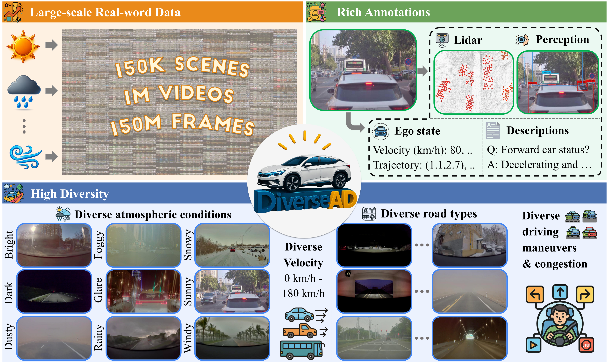
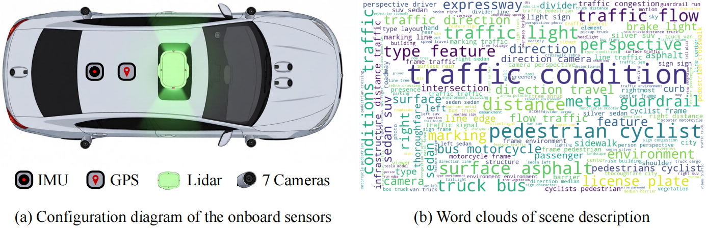
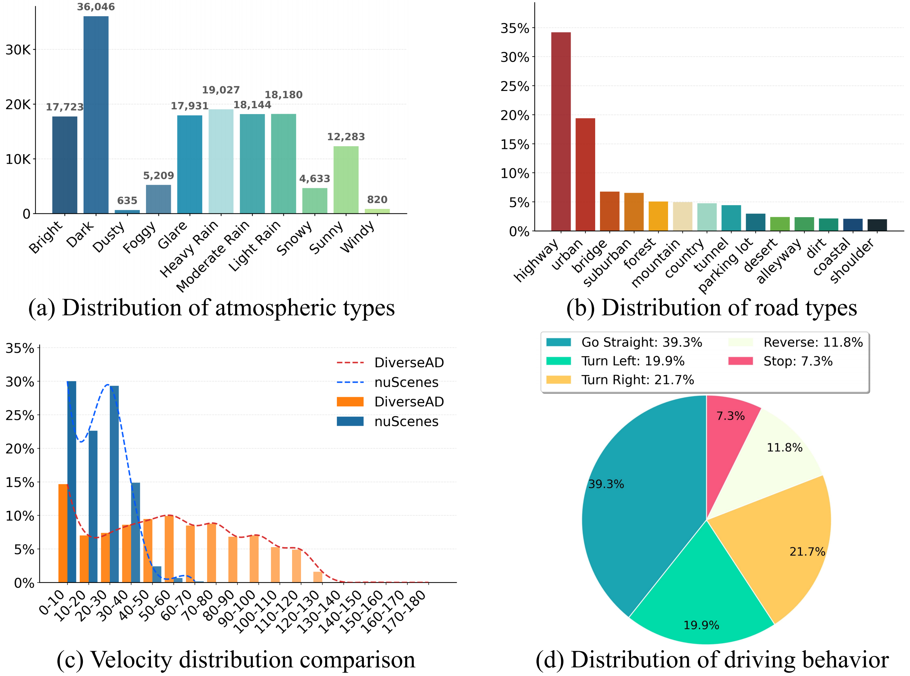
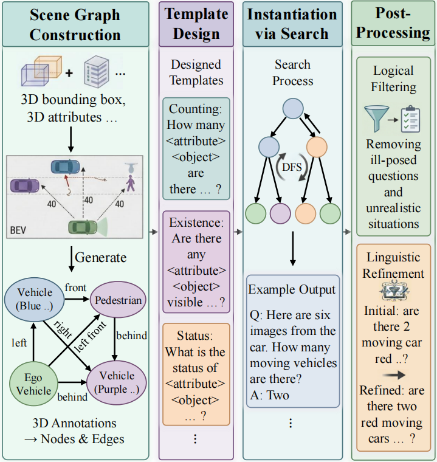
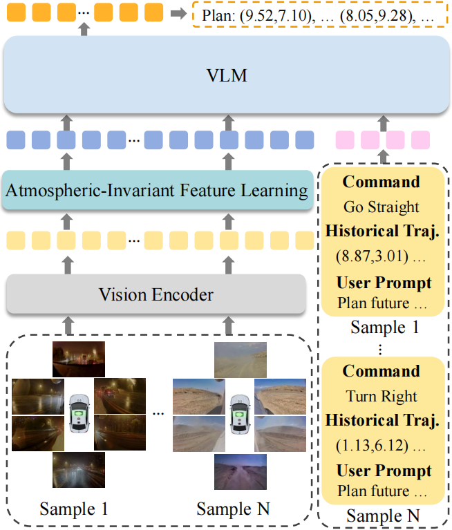

A Large-Scale Driving Dataset with Diverse Atmospheric Conditions
Strong generalization to diversified atmospheric conditions is crucial for autonomous driving models. However, models trained on existing datasets struggle with real-world complexity due to homogeneous weather, limited maneuvers, and insufficient scale.
To overcome this issue, we introduce DiverseAD, a large-scale driving dataset comprising 150K scenes that feature great diversity in atmospheric conditions, road types, and driving actions. Based on this dataset, we further propose a novel end-to-end autonomous driving model robust across diverse atmospheric conditions.
Specifically, an Atmospheric-Invariant Feature Learning mechanism is proposed, which disentangles atmospheric-agnostic features from visual inputs by using driving intent and scene structure cues as stable anchors. Experiments demonstrate that DiverseAD is superior to existing public datasets in diversity, and our proposed model sets a new standard for end-to-end planning robustness in challenging weather.
DiverseAD delivers three key advantages: large-scale real-world data, high environmental diversity, and rich multimodal annotations for perception, planning, and VQA.

Figure 1: Overview of DiverseAD. DiverseAD delivers three key advantages: large-scale real-world data (150K scenes, 1M videos, 150M frames), high environmental diversity (9 atmospheric types, 14 road types, 0–180 km/h), and rich multimodal annotations (3D perception, trajectory, and VQA pairs).
Captured across vast real-world environments featuring 150K unique scenes, over 1 Million videos, and more than 150 Million frames recorded with a multi-camera array.
Covers 9 atmospheric types (Bright, Dark, Dusty, Foggy, Glare, Rainy, Snowy, Sunny, Windy), 14 road typologies, and vehicle speeds spanning 0 to 180 km/h across various driving behaviors.
Features 7-camera RGB videos, synchronized LiDAR point clouds, 3D bounding boxes, lane boundaries, real-time ego trajectories, and natural language descriptions with VQA pairs.

Figure 2: Sensor configuration (IMU, GPS, LiDAR, 7 Cameras) and scene description word clouds.

Figure 3: Distributions of atmospheric conditions, road types, vehicle velocity (vs. nuScenes), and driving behaviors.
DiverseAD offers substantially larger scale and broader atmospheric coverage than prior perception and planning datasets.
| Dataset | Year | Cameras | Scenes | Frames | LiDAR | Atmospheric Conditions | Task |
|---|---|---|---|---|---|---|---|
| Foggy Zurich | 2018 | 1 | - | 3,808 | ✗ | Foggy | Perc. |
| BDD100K | 2020 | 1 | 100K | - | ✗ | Rainy, foggy, snowy, dark | Perc. |
| ACDC | 2021 | 1 | - | 8,012 | ✗ | Rainy, foggy, snowy, dark | Perc. |
| nuScenes | 2019 | 6 | 1K | 40K | ✓ | Normal | Plan. |
| Waymo E2E | 2019 | 8 | 4K | - | ✗ | Normal | Plan. |
| nuPlan | 2021 | 6 | 15K | - | ✓ | Normal | Plan. |
| ★ DiverseAD (Ours) | 2026 | 7 | 150K | 150M | ✓ | Rainy, foggy, snowy, dark, bright, dusty, glare, sunny, windy | Plan. |
To advance research in Vision-Language-Action (VLA) models, we establish a scalable VQA generation pipeline.

Building relational graphs from 3D bounding boxes projected onto Bird's-Eye-View (BEV).
Formulating query templates covering existence, counting, and object status.
Programmatically deducing answers via Depth-First Search (DFS) along semantic scene graph paths.
Combining VLM-based filtering and manual validation to prune ill-posed queries.
Standard end-to-end models often overfit to transient atmospheric perturbations. We disentangle driving-critical features from weather noise by introducing two auxiliary invariant anchors.

Instead of absolute coordinates, we normalize instantaneous displacement vectors \(\hat{v}_k\) to compute pairwise intent similarity:
A soft KL-divergence constraint aligns visual representations of scenes sharing identical maneuvers across different domains.
We leverage a pre-trained foundation model (DINOv3) as a frozen structure expert \(\Phi\). By converting feature cosine similarity into Gaussian-weighted targets:
The policy network distills invariant structural layouts while shedding domain-variant style variations.
End-to-end planning L2 displacement and VQA accuracy on the DiverseAD benchmark. * indicates models fine-tuned on the DiverseAD training split.
| Method | All — L2 (m) ↓ | VQA Acc. (%) ↑ | |||
|---|---|---|---|---|---|
| 1s | 2s | 3s | Avg. | ||
| UniAD (CVPR'23) | 15.40 | 31.11 | 46.99 | 31.17 | - |
| UniAD* | 1.04 | 2.06 | 3.23 | 2.11 | - |
| VAD (ICCV'23) | 15.01 | 30.02 | 44.97 | 30.00 | - |
| VAD* | 0.72 | 1.67 | 2.69 | 1.69 | - |
| OpenEMMA* (arXiv'24) | 0.71 | 1.60 | 2.67 | 1.66 | 60.28 |
| OmniDrive* (CVPR'25) | 0.61 | 1.45 | 2.50 | 1.52 | 64.51 |
| FSDrive* (NeurIPS'25) | 0.59 | 1.38 | 2.34 | 1.44 | 65.33 |
| ★ Ours | 0.53 | 1.21 | 1.99 | 1.24 | 72.68 |
@article{wang2026diversead,
title={DiverseAD: A Large-Scale Driving Dataset with Diverse Atmospheric Conditions},
author={Wang, Haoyu and Ma, Baorui and Di, Donglin and Xuan, Suhang and Li, Hao and Zhang, Shiliang},
journal={arXiv preprint},
year={2026}
}